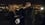

Rated: 8.4 out of 10 with 107,547 votes.
When the Police Service of Northern Ireland are unable to close a case after 28 days, Detective Superintendent Stella Gibson of the Metropolitan Police Service is called in to review the case. Under her new leadership, the local detectives must track down and stop a serial killer who is terrorising the city of Belfast.


Season: 3
Show Episodes
Hide Episodes
| # | Title | Watched | Air Date | ||
|---|---|---|---|---|---|
| 6 | Their Solitary Way | Friday, October 28th, 201610/28/16 | |||
| 5 | Wounds of Deadly Hate | Sunday, October 23rd, 201610/23/16 | |||
| 4 | The Hell Within Him | Sunday, October 16th, 201610/16/16 | |||
| 3 | The Gates of Light | Sunday, October 9th, 201610/09/16 | |||
| 2 | His Troubled Thoughts | Sunday, October 2nd, 201610/02/16 | |||
| 1 | Silence and Suffering | Sunday, September 25th, 201609/25/16 |
Season: 2
Show Episodes
Hide Episodes
| # | Title | Watched | Air Date | ||
|---|---|---|---|---|---|
| 6 | In Summation | Wednesday, December 17th, 201412/17/14 | |||
| 5 | The Fall | Sunday, December 7th, 201412/07/14 | |||
| 4 | Strangler | Sunday, November 30th, 201411/30/14 | |||
| 3 | It's Always Darkest | Sunday, November 23rd, 201411/23/14 |  | ||
| 2 | One Named Peter | Sunday, November 16th, 201411/16/14 | |||
| 1 | Walk the Line | Sunday, November 9th, 201411/09/14 |
Season: 1
Show Episodes
Hide Episodes
| # | Title | Watched | Air Date | ||
|---|---|---|---|---|---|
| 5 | The Vast Abyss | Sunday, June 9th, 201306/09/13 | |||
| 4 | My Adventurous Song | Sunday, June 2nd, 201306/02/13 | |||
| 3 | Insolence & Wine | Sunday, May 26th, 201305/26/13 | |||
| 2 | Darkness Visible | Sunday, May 19th, 201305/19/13 | |||
| 1 | Dark Descent | Sunday, May 12th, 201305/12/13 |
You may also like these TV Shows: